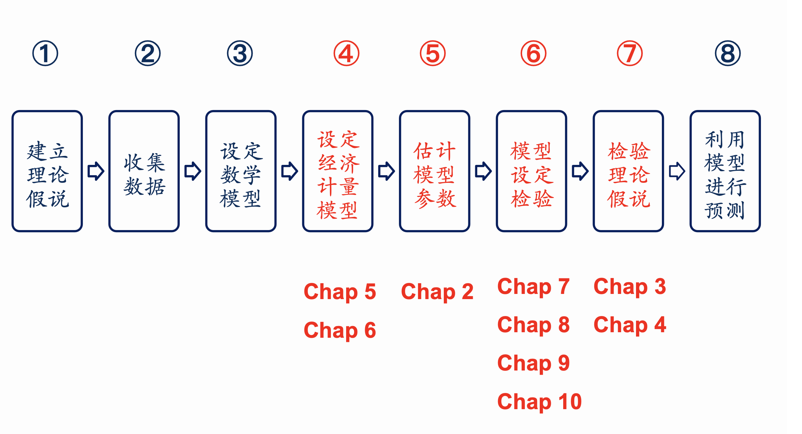

Chapter 1
The Nature and Scope of Econometrics
2026-09-01
Chapter 1 Outline
- 1.1 What is Econometrics?
- 1.2 Why Study Econometrics?
- 1.3 The Methodology of Econometrics
- Course Info
- Data Sources
1.1 What is Econometrics?
- Econometrics: 经济计量学（计量经济学）
- Narrow sense: economic measurement（经济度量）
- Broader sense: ……
- Biometrics: 生物计量学
1.1 What is Econometrics?
- 经济计量学：利用经济理论、数学、统计推断等工具对经济现象进行分析的一门社会科学。
“Econometrics may be defined as the social science in which the tools of economic theory, mathematics, and statistical inference are applied to the analysis of economic phenomena.”
— Arthur S. Goldberger (1964), Economic Theory
Two branches of Econometrics
- Theoretical econometrics（理论经济计量学）
- Applied econometrics（应用经济计量学）
1.2 Why Study Econometrics?
- Validate economic theory
- Provide numerical estimates
1.3 The Methodology of Econometrics
- Creating a statement of theory or hypothesis（建立理论或假说）
- Collecting Data（收集数据）
- Specifying the mathematical model of theory（设定理论的数学模型）
- Specifying the econometric model（设定经济计量学模型）
- Estimating the parameters of the chosen econometric model（估计模型参数）
- Model specification testing（模型设定检验）
- Testing the hypothesis derived from the model（检验模型导出的假说）
- Using the model for prediction or forecasting（利用模型进行预测）
案例：财务总监薪酬分析
- 数据来源：上市公司财务总监薪酬及个人特征（CSMAR 数据库）
- 关注特征：性别？年龄？学历？行业？经营绩效？
- 统计分析方法：
- 思考：如何选择适当的统计分析方法？
薪酬分析：经济计量学的视角
- 经济理论（指导变量选取与关系假设）
- 数学（建立函数形式表达式）
- 统计推断（利用样本数据估计与检验）
案例一 · Step 1: 建立假说
- 理论假说：工资由劳动力的人力资本决定
- 研究目标：
- 资历对工资的影响效应是什么？如何量化？
- 学历对工资的影响效应是什么？如何量化？
案例一 · Step 2: 收集数据 (CSMAR)
- 数据库：国泰安 CSMAR 数据库 \(\rightarrow\) 公司研究系列 \(\rightarrow\) 治理结构 \(\rightarrow\) 高管个人资料文件 / 年薪区间文件
案例一 · Step 2: 数据样本
- 样本筛选：2017 年年报，职位为财务总监（代码
00380000A0），样本容量 1095 家公司（剔除信息不全、任职不足一年及薪酬最低/最高各 5% 极端值）。
| 000008 |
王守俊 |
男 |
44 |
3 |
|
991,900 |
| 000010 |
李卉 |
男 |
33 |
3 |
|
467,200 |
| 000016 |
李春雷 |
男 |
45 |
4 |
|
1,507,000 |
| 000019 |
王志萍 |
女 |
47 |
3 |
会计师 |
448,900 |
| 000022 |
张方 |
男 |
53 |
3 |
|
800,000 |
| 000023 |
张慧 |
男 |
35 |
3 |
高级会计师 |
281,700 |
| 000028 |
魏平孝 |
男 |
54 |
4 |
会计师 |
1,575,000 |
案例一 · 变量定义与编码说明
- 教育背景 (Education)：
1 = 中专及中专以下2 = 大专3 = 本科4 = 硕士研究生5 = 博士研究生6 = 其他
- 职位代码：
00380000A0（末两位字母 A 代表财务方向）
案例一 · Step 3: 设定数学模型
- 被解释变量：\(Salary\)
- 解释变量：\(Age\), \(Education\)
- 函数形式： \[Salary = B_0 + B_1 Age + B_2 Education\]
案例一 · Step 4: 设定计量经济学模型
- 数学模型： \[Salary = B_0 + B_1 Age + B_2 Education\]
- 计量经济学模型（引入随机误差项 \(u\)）： \[Salary = B_0 + B_1 Age + B_2 Education + u\]
- 参数符号预期：
- \(B_1 > 0\)（年龄越长，资历越深，工资越高）
- \(B_2 > 0\)（学历越高，工资越高）
案例一 · Step 5: 估计模型参数
- 估计方法：普通最小二乘法 (OLS)
- 软件实现：Excel / Eviews / Stata / R
- 估计的回归方程： \[\widehat{Salary}_i = -157635.2 + 5604.7 Age_i + 118184.4 Education_i\]
案例一 · Step 6: 模型诊断 (Adequacy)
- 函数的设定形式是否正确？
- 工资和年龄之间是纯线性关系吗？
- 是否应该使用半对数模型：\(\ln(Salary)_i = B_0 + B_1 Age_i + B_2 Education_i + u_i\)？（见第 5 章）
- 模型是否存在遗漏变量？
案例一 · Step 6: 计量检验对应章节
- 第 7 章：模型选择（标准与设定检验）
- 第 8 章：多重共线性 (Multicollinearity)
- 第 9 章：异方差 (Heteroskedasticity)
- 第 10 章：自相关 (Autocorrelation)
案例一 · Step 7: 检验理论假说
- 模型形式：\(Salary = B_0 + B_1 Age + B_2 Education + u\)
- 检验对待估参数的理论假说：
- \(H_0: B_1 \le 0 \quad \text{vs} \quad H_1: B_1 > 0\)
- \(H_0: B_2 \le 0 \quad \text{vs} \quad H_1: B_2 > 0\)
- 具体检验方法参见第 3 章 & 第 4 章单个参数的假设检验。
案例一 · Step 8: 模型预测与应用
- 预测情境：预测年龄 40 岁、硕士研究生学历（\(Edu = 4\)）的财务总监薪酬。
- 带入回归模型： \[\begin{aligned}
\widehat{Salary} &= -157635.2 + 5604.7 \times Age + 118184.4 \times Education \\
&= -157635.2 + 5604.7 \times 40 + 118184.4 \times 4 \\
&= 539,290.4 \text{ 元}
\end{aligned}\]
案例一 · 深度思考与拓展
- 模型对现实现象的解释程度如何？这是一个好模型吗？
- 关于学历的测度：分类赋值（1-5）是否合理？
- 关于资历的测度：
- 生理年龄 vs 真实工龄？
- 现职位任职时长？
- 行业任职经历？
案例二：穗京直航机票价格影响因素
- 研究主题：穗京直航经济舱机票价格影响因素分析
- 研究对象与样本：穗京直航航班，2020.11.8 查询的未来一周共 256 个航班数据。
- 主要影响因素：
- 提前订票天数
- 执飞机型
- 航班起飞时点
- 航空公司品牌
案例二 · 变量定义 (一)
- Price：经济舱机票价格（单位：元）
- Advance：提前购票天数（单位：天）。以 2020 年 11 月 8 日为基准，若购 11 月 9 日票则 \(Advance = 1\)，11 月 15 日票则 \(Advance = 7\)。
- Takeoff：航班起飞时点（24 小时制折算）。例如 10:30 \(\rightarrow 10.5\)；14:00 \(\rightarrow 14.0\)；23:15 \(\rightarrow 23.25\)。
案例二 · 变量定义 (二)
- Large（虚拟变量）：\(Large = 1\) 表示大型客机执飞；\(Large = 0\) 表示中小型客机执飞。
- China（虚拟变量）：\(China = 1\) 表示中国国航执飞；\(China = 0\) 表示其他航司。
- Southern（虚拟变量）：\(Southern = 1\) 表示南方航空执飞；\(Southern = 0\) 表示其他航司。
案例二 · Step 1: 建立理论假说
- 假说 1（差别化定价理论）：越早购票，机票价格越优惠。
- 假说 2（成本与效用理论）：航班起飞时点越便利，票价越贵；早晨和深夜起飞的航班价格较低。
- 假说 3（市场竞争理论）：市场份额大的大型航空公司票价高于中小航空公司。
案例二 · Step 2: 收集数据
- 数据来源：携程网（爬虫抓取网页数据）
- 核心字段：机票价格、提前购票天数、起飞时点、起飞日是星期几、机型大小、航空公司
案例二 · 样本数据预览
| 中国联航KN5900 |
758 |
93% |
21:35 |
波音737-800(中) |
0 |
中国联航 |
KN5900 |
1 |
0 |
| 中国国航CA1310 |
780 |
87% |
8:10 |
波音777-300ER(大) |
1 |
中国国航 |
CA1310 |
2 |
0 |
| 中国国航CA1352 |
780 |
87% |
12:30 |
波音777-200(大) |
1 |
中国国航 |
CA1352 |
2 |
0 |
| 海南航空HU7810 |
800 |
53% |
22:20 |
78A(大型) |
1 |
海南航空 |
HU7810 |
1 |
0 |
| 东方航空MU5182 |
920 |
97% |
11:40 |
A330-300(大) |
1 |
东方航空 |
MU5182 |
2 |
0 |
| 中国联航KN5830 |
937 |
83% |
17:15 |
波音737(中) |
0 |
中国联航 |
KN5830 |
1 |
0 |
案例二 · Step 3: 设定数学模型
\[\begin{aligned}
Price_i = & B_0 + B_1 Takeoff_i + B_2 Takeoff_i^2 + B_3 Advance_i \\
& + B_4 Large_i + B_5 Southern_i + B_6 China_i
\end{aligned}\]
案例二 · Step 4: 设定计量经济学模型
\[\begin{aligned}
Price_i = & B_0 + B_1 Takeoff_i + B_2 Takeoff_i^2 + B_3 Advance_i \\
& + B_4 Large_i + B_5 Southern_i + B_6 China_i + u_i
\end{aligned}\]
- \(u_i\)：随机误差项
- 二次项引入：反映非线性时间规律（第 5 章）
- 虚拟变量引入：量化属性特征（第 6 章）
案例二 · Step 5: OLS 参数估计表
Dependent Variable: PRICE | Method: Least Squares | Included observations: 256
| C |
265.7471 |
203.4456 |
1.306232 |
0.1927 |
| TAKEOFF |
191.7269 |
28.14661 |
6.811724 |
0.0000 |
| TAKEOFF^2 |
-7.001507 |
0.948489 |
-7.381750 |
0.0000 |
| ADVANCE |
-91.76225 |
7.298602 |
-12.57258 |
0.0000 |
| LARGE |
124.4946 |
45.08694 |
2.761211 |
0.0062 |
| SOUTHERN |
342.2230 |
41.37619 |
8.271013 |
0.0000 |
| CHINA |
263.7842 |
46.19458 |
5.710284 |
0.0000 |
- \(R^2 = 0.5803\), \(\text{Adjusted } R^2 = 0.5702\), \(F = 57.39\), \(P(F) = 0.0000\)
案例二 · Step 6: 模型诊断要点
- 模型设定误差检验（第 7 章）
- 多重共线性诊断（第 8 章）
- 异方差检验（第 9 章）
- 自相关检验（第 10 章）
案例二 · Step 7: 假说 1 检验
- 假说 1：越早购票，机票价格越优惠（\(B_3 < 0\)）。
- 实证检验：
- \(ADVANCE\) 的回归系数为 -91.76（\(P < 0.001\)）。
- 经济含义：在控制其他变量不变的情况下，提前 1 天购票，机票价格平均便宜约 92 元。
- 实证结果支持假说 1。
案例二 · 起飞时点非线性极值求解
\[\widehat{Price} = 265.75 + 191.73 Takeoff - 7.002 Takeoff^2 - 91.76 Advance + \dots\]
- 对 \(Takeoff\) 求一阶导数令其等于 0： \[\frac{dPrice}{dTakeoff} = 191.727 - 2 \times 7.002 \cdot Takeoff = 0\] \[Takeoff^* = \frac{191.727}{2 \times 7.002} = \mathbf{13.7 \text{ 时}} \quad (13\text{点}42\text{分})\]
案例二 · 起飞时点与票价曲线图

- 曲线呈倒 U 型：13:42 起飞的航班票价最高；起飞时点距离 13:42 越早或越晚，票价越便宜。
案例二 · Step 7: 假说 2 检验
- 假说 2：起飞时点存在黄金时段，早晚低价（\(B_1 > 0, B_2 < 0\)）。
- 实证检验：
- \(TAKEOFF\) 系数为正，\(TAKEOFF^2\) 系数显著为负。
- 实证分析结论完全支持假说 2。
案例二 · Step 8: 模型预测应用
- 设定情境：提前 7 天购票（\(Advance=7\)），起飞时间 18 点（\(Takeoff=18\)），中型客机（\(Large=0\)），南方航空（\(Southern=1, China=0\)）。
- 计算预测值： \[\begin{aligned}
\widehat{Price} = & 265.75 + 191.73(18) - 7.002(18^2) - 91.76(7) \\
& + 124.49(0) + 342.22(1) + 263.78(0) \\
\approx & \mathbf{1148 \text{ 元}}
\end{aligned}\]
Step 1: 建立理论或假说 (Hypothesis)
- 经济学与健康学视角：
- 空气污染物（\(PM_{2.5}, PM_{10}, SO_2, NO_2, CO, O_3\)）在短期暴露下会导致人体肺功能下降、心律不齐、呼吸系统受损及焦虑等心理负效应。
- 高强度户外活动时呼吸量急剧上升，空气污染会直接降低户外劳动者/运动员的即期生产力（Short-run Productivity。
- 核心理论假说：
- 假说 1：空气质量越差（AQI 越高），跑者的完赛耗时越长（生产力下降。
- 假说 2（非线性效应）：重度污染天气对成绩的边际损害递增。
- 假说 3（异质性效应）：专业跑者、年轻跑者与半马/全马跑者对污染的弹性存在差异。
Step 2: 收集数据 (Collecting Data)
论文构建了一个涵盖“微观个体 + 赛事特征 + 宏观环境”的微观横截面与面板数据集
- 1. 跑者与比赛成绩数据：
- 来源：中国田径协会（CAA）官方网站（
www.runchina.org.cn。
- 样本：2014–2015 年 37 个城市举办的 55 场马拉松比赛，共 314,341 名国内跑者（全马 172,523 人，半马 141,818 人）。
- 变量：净完赛时间（秒）、性别、年龄段、全马/半马标签。
- 2. 空气质量数据 (AQI)：
- 来源：国家环境保护部（MEP）数据中心。
- 变量：比赛日日均 AQI（28–289）及比赛时段（6:00–15:00）逐时 6 种污染物浓度。
- 3. 气象控制变量：
- 来源：彭博全球天气数据库（Bloomberg）。
- 变量：降水量、气温、风速、相对湿度。
Step 2: 数据特征与类型归属
| 全马完赛时间 (秒) |
16,581 (4h36m) |
2,701 |
8,301 |
24,337 |
横截面微观数据 |
| 跑者性别 (女性占比) |
19% |
0.39 |
0 |
1 |
虚拟变量 |
| 跑者年龄 (18-34岁占比) |
50% |
0.50 |
0 |
1 |
虚拟变量 |
| 比赛日 AQI 指数 |
102.19 |
58.86 |
28.00 |
289.00 |
连续变量 |
| 比赛时段 \(PM_{2.5} (\mu g/m^3)\) |
73.89 |
60.89 |
5.89 |
268.57 |
超出 WHO 标准 3 倍 |
- 数据结构拓展：除了全样本截面分析外，作者还将跨场次参赛的同一姓名/性别/年龄跑者匹配，构造了 个体面板数据（Runner Panel Data）。
Step 3: 设定理论的数学模型
设定完赛时间（\(Finishtime\)）与空气质量（\(AQI\)）、气象环境（\(W\)）以及跑者个体特征（\(X\)）之间的双对数（Log-Log）函数形式：
\[\ln(Finishtime_{ijt}) = f(\ln(AQI)_{jt}, W_{jt}, X_i)\]
- 采用双对数形式的经济学理由：
- 自变量系数 \(\beta_1\) 可以直接解释为 完赛时间的空气污染弹性（Elasticity），即 AQI 每恶化 1%，完赛时间平均增加 \(\beta_1\%\)。
Step 4: 设定计量经济学模型
加入不可观测因素误差项 \(\epsilon_{ijt}\) 与城市固定效应 \(\alpha_j\)：
\[\ln(Finishtime)_{ijt} = \alpha_j + \beta_1 \ln(AQI)_{jt} + \beta_2 W_{jt} + \beta_3 X_i + \delta \cdot Year2015 + \sum \gamma_m Month_m + \epsilon_{ijt}\]
- 因变量：\(\ln(Finishtime)_{ijt}\)（城市 \(j\) 第 \(t\) 天跑者 \(i\) 的完赛时间对数）。
- 核心自变量：\(\ln(AQI)_{jt}\)（空气质量指数对数）。
- 控制变量：
- \(W_{jt}\)：降水量、温度、风速、相对湿度；
- \(X_i\)：女性虚拟变量、5 个年龄组虚拟变量、全马/半马虚拟变量；
- \(\alpha_j\)：城市固定效应（吸收各赛道海拔、起伏、弯道等不随时间改变的地理特征）；
- \(Month_m\)：双月虚拟变量（控制季节性规律）；
- \(\epsilon_{ijt}\)：随机误差项。
- 待估参数预期：\(\beta_1 > 0\)（污染显著拖慢成绩）。
Step 4: 因果识别逻辑 (Causal Identification)
- 外生性来源（准自然实验）：
- 马拉松通常需提前数月报名缴费（如北京提前 2 个月、武汉提前 3 个月）。
- 跑者虽能预期某城市的季节性平均气候，但无法提前预测比赛当天的瞬时 AQI 随机波动。
- 在控制了城市固定效应与季节效应后，比赛日空气质量对跑者而言具有严格外生性。
Step 5: 估计模型参数 (OLS 与固定效应)
全样本基准回归结果（因变量：\(\ln(Finishtime)\)，聚类标准误于赛事层面）：
| \(\ln(AQI)\) |
0.0273\(^{*}\) |
0.0408\(^{***}\) |
0.0408\(^{***}\) |
— |
|
(0.0114) |
(0.0030) |
(0.0026) |
|
| \(AQI\) (线性值) |
— |
— |
— |
2.7311\(^{***}\) (0.4434) |
| 全马虚拟变量 |
0.6731\(^{***}\) |
0.6731\(^{***}\) |
0.6944\(^{***}\) |
8216.76\(^{***}\) |
| 女性跑者 (Female) |
— |
— |
0.0919\(^{***}\) |
988.75\(^{***}\) |
| 降水量 (Precipitation) |
— |
0.0282\(^{***}\) |
0.0280\(^{***}\) |
134.29 |
| 气温 (Temperature) |
— |
0.0049\(^{***}\) |
0.0047\(^{***}\) |
85.99\(^{***}\) |
| Adjusted \(R^2\) |
0.8299 |
0.8306 |
0.8417 |
0.8107 |
| 样本量 \(N\) |
314,341 |
314,341 |
314,341 |
314,341 |
Step 6: 模型设定与诊断检验 (Adequacy & Robustness)
论文进行了极其严密的高阶计量检验，对应课件 Chap 5-10 的检验思想[cite: 1]：
- 1. 误差项相关性处理（Chap 10 自相关思想拓展）：
- 同一场比赛跑者的误差项可能受赛事组织影响而相关，标准误在 比赛场次层面进行聚类调整（Clustered SE）。
- 2. 遗漏变量与个体固定效应模型（Runner FE）：
- 引入跑者个体固定效应 \(\mu_i\) 消除基因、心理预期、训练水平等不可观测遗漏变量的影响，\(\beta_1\) 依然在 1% 水平上显著正相关（弹性为 0.0054~0.0071）。
- 3. 非线性函数形式检验（Chap 5）：
- 加入 \(AQI^2\) 二次项以及不同污染等级虚拟变量（蓝天 vs 重度污染），证实重污染天（\(AQI>200\)）对跑者的负面冲击是轻度污染天的 3 倍（增加 7.65% 完赛耗时）。
- 4. 测度误差稳健性检验：
- 使用比赛时段 6:00–15:00 的逐时平均 AQI 及各单一污染物（\(PM_{2.5}, PM_{10}, SO_2\)）浓度重新估计，结果完全一致。
Step 7: 检验理论假说 (Testing Hypotheses)
- 假设检验设定：
- \(H_0: \beta_1 \le 0 \quad \text{vs} \quad H_1: \beta_1 > 0\)
- 实证检验结论：
- \(t = \frac{0.0408}{0.0026} = 15.69 \quad (p < 0.001)\)，在 1% 统计水平上强力拒绝原假设，完全支持假说 1。
- 异质性检验结果（分样本回归）：
- 全马 vs 半马：半马弹性（0.0494）高于全马（0.0274）。
- 顶尖专业跑者：对前 20 名精英跑者，污染弹性依然达到 0.0286 且显著。
- 分位数回归 (Quantile)：全马跑者中，前 10% 的快速跑者受污染冲击是后 10% 慢跑者的 3 倍。
Step 8: 利用模型进行预测与经济学解释
基于基准回归模型 \(\widehat{\beta_1} = 0.0408\) 进行经济效应数值推演：
- 普通全马跑者预测（2014 北京马拉松真实场景）：
- 全国基准日均 \(AQI = 102\)，全马平均耗时 16,581 秒（4 小时 36 分）。
- 2014 北马当天遭遇严重雾霾（\(AQI = 289\)）： \[\Delta \ln(AQI) = \ln(289) - \ln(102) \approx 1.0415 \quad (+104.15\%)\] \[\Delta Finishtime = 16581 \times (0.0408 \times 1.0415) \approx \mathbf{1243 \text{ 秒（约 20.7 分钟）}}\]
- 前 20 名精英跑者经济损失测算：
- 精英跑者平均耗时将增加 10.2 分钟。
- 北马冠军奖金 4 万美元（要求跑进 2:09:00），亚军与冠军时间仅差 1 分钟奖金即缩水 2 万美元；
- 结论：空气污染造成的完赛时间延误具有极其高昂的经济与名次机会成本。
文献对实证示
- 1. 严谨的因果识别：寻找现实制度中的“外生性时滞”（提前报名）解决内生性反向因果问题。
- 2. 灵活运用数据类型：将大样本横截面（Cross-sectional）与个体面板（Panel Data）巧妙结合，有效控制个体固定效应。
- 3. 扎实的研究步骤：从经济学理论假说出发，完成“设定 \(\rightarrow\) 估计 \(\rightarrow\) 诊断 \(\rightarrow\) 检验 \(\rightarrow\) 预测”的全流程闭环[cite: 1, 2]。
Methodology of Econometrics

小组作业：开展经济计量实证研究
- 结合选题深入讨论：
- 核心理论假说是什么？
- 经济计量模型的表达式如何构建？
- 对模型中的待估参数有何理论预期？
- 如何科学测度因变量与自变量？
- 通过何种渠道收集样本数据？
往届优秀学生课题参考
- 麦当劳门店数量影响因素分析（19金融3 陈沁雪）
- 广州酒店客房价格影响因素分析（19金融3 陶羽）
- 手机价格影响因素分析（19金融4 黄锦毅）
- 欧洲杯球员评分影响因素分析（19金融4 林梓翰）
- 二手车价格影响因素分析（19金融4 张培芸）
DATA
- 横截面数据 (Cross-sectional data)
- 时间序列数据 (Time Series data)
- 合并数据 (Pooled data)
- 面板数据 (Panel data)
Pooled data (合并数据)
- 定义：包含相对较少数量的截面单元，在一段时间内的跨期混合观测。
- 示例：10 个国家在连续 20 年间的 GDP 序列。
Panel data (面板数据)
- 定义：跨时间观测大量截面单元（观测单元数远超观测期数，即大 \(N\) 小 \(T\)）。
- 特点：跟踪同一批个体在时间维度上的动态变化。
面板数据实例：150 个城市犯罪记录面板
| 1 |
1986 |
5 |
350,000 |
440 |
| 1 |
1990 |
8 |
359,200 |
471 |
| 2 |
1986 |
2 |
64,300 |
75 |
| 2 |
1990 |
1 |
65,100 |
75 |
| … |
… |
… |
… |
… |
| 150 |
1986 |
25 |
543,000 |
520 |
| 150 |
1990 |
32 |
546,200 |
493 |
Terminology
- parameters（参数）
- error term（随机误差项 / 误差项）
- dependent variable（应变量 / 因变量 / 被解释变量）
- independent variable（自变量 / 独立变量 / 解释变量）
Chapter 1 Summary
- Methodology of Econometrics
- Types of Data：
- Time series
- Cross-sectional
- Pooled Data / Panel Data
- Terminology：
- Intercept, Slope, Error term, Dependent / Independent variables
Course Info
- 初级 / 应用经济计量学
- 教学侧重：
- 不作复杂的纯数理统计推导与公式证明要求；
- 不强调手工繁琐计算；
- 重视实际问题分析与现代统计软件实现。
课程目标
- 运用经济计量方法科学分析现实经济与管理问题；
- 熟练利用统计与计量软件开展实证建模分析。
课程安排
- 学时与学分：64 学时，4学分
- 教学形式：
- 理论新课 + 随堂练习
- 习题讲评、答疑
- EViews操作
- 案例讨论
学习方法建议
- 精读教材 (Textbook) + 笔记
- 练习 + 软件应用实操
- 案例分析与研讨
- 积极参与课堂提问与交流
主要选用教材
- 教材：
- Damodar N. Gujarati & Dawn C. Porter, Essentials of Econometrics (4th edition), McGraw-Hill, 2009.

推荐参考书目清单
Stock & Watson, Introduction to Econometrics (Global Edition)
Wooldridge, Introductory Econometrics: A Modern Approach (6th ed.)
伍德里奇, 《计量经济学导论：现代观点》（中文第六版）
Kleiber & Zeileis, Applied Econometrics with R
Roberto Pedace, Econometrics For Dummies
洪永淼, 《高级计量经济学》（研究生教学用书）
Data Sources
- 宏观数据 (Macro Data)
- 微观数据 (Micro Data)
宏观数据主要来源
- 国家统计局：
http://www.stats.gov.cn/
- 政府各部委公开数据：
http://www.gov.cn/
- 联合国统计司：
http://data.un.org/
- 世界银行公开数据：
https://data.worldbank.org
国家政府部委公开网站资源
- 外交部、发展改革委、教育部、科技部、公安部、民政部、司法部、财政部、环保部、住建部、交通运输部、水利部、农业部、商务部、卫计委、人民银行、审计署、国资委、海关总署、国家知识产权局等。
高校图书馆订购数据库
- 宏观数据库（国家、省、市、县多级）：
- EPS 全球数据库
- 国研网 (DRCNET)
- 中国知网 (CNKI) 统计数据平台
- 微观数据库（上市公司/金融市场）：
- CSMAR 国泰安经济金融数据库
- RESSET (锐思) 金融研究数据库
数据库访问规范提示
- IP 访问限制：务必在校园网 IP 地址范围内访问；
- 正规入口：从大学图书馆主页 \(\rightarrow\) 电子资源 \(\rightarrow\) 中文/外文数据库检索进入；
- 注意：避免通过公共搜索引擎直接搜索第三方链接访问。
EPS 全球统计数据平台
- 网址：
http://olap.epsnet.com.cn
- 收录资源：
- 全球主要经济体宏观数据
- 中国区域经济数据库（分省、分市、分县级宏观综合数据）
- 涵盖农业、工业、投资、消费、教育与卫生等专项模块
国研网 (DRCNET) 统计数据库
- 主办机构：国务院发展研究中心信息中心
- 网址：
http://data.drcnet.com.cn
- 三大核心子库：
- 世界经济数据库
- 宏观经济数据库
- 区域经济与重点行业数据库
中国知网 (CNKI) 大数据研究平台
- 访问路径：中国知网 \(\rightarrow\) 大数据研究平台 \(\rightarrow\) 统计数据
- 功能：文献检索、统计数据指标检索、年鉴全文检索、表格与数据条目一键导出
中国知网 · 统计数据年鉴导航
- 网址：
http://tongji.cnki.net/
- 收录规模：超 1,143 种统计年鉴、7,151 册统计资料、数千万条时间序列指标。
- 热门年鉴：
- 《中国统计年鉴》、《中国金融年鉴》、《中国城市统计年鉴》、《中国农村统计年鉴》、《国际统计年鉴》及各省份统计年鉴。
知网统计年鉴：多维分类检索
- 领域分类：综合、国民经济核算、固定资产投资、人口与人力资源、财政金融、自然资源能源、工业、农业等。
- 资料类型：统计年鉴、分析报告、资料汇编、调查资料、普查资料、统计摘要。
重点年鉴：《中国统计年鉴》

- 编撰机构：国家统计局 / 中国统计出版社
- 收录范围：1981 年至今历年国民经济综合指标
重点年鉴：《中国城市统计年鉴》

- 特色：涵盖全国地级以上城市及县级市的行政区划、人口变动、经济产出、市政建设等细粒度数据（支持 Excel 直接下载）。
CSMAR (国泰安) 经济金融数据库
- 定位：中国上市公司与证券市场研究微观数据库
- 网址：
http://www.gtarsc.com/Home
- 特色：涵盖股票市场、公司治理结构、财务报表、管理层特征、并购重组与违规处理等。
CSMAR 公司研究系列子模块
- 股票市场系列、因子研究系列、公司治理结构、高管特征与薪酬、财务指标分析、分析师预测、审计研究、精准扶贫、绿色金融等。
RESSET (锐思) 金融研究数据库
- 网址：
http://www.resset.cn/
- 特色：与国泰安互补，深度覆盖管理层职位、持股与薪酬变动历史、股权激励计划、现金分红等微观高频数据。
RESSET 数据检索流程
- 选择日期范围（任职起始日 / 报告期）；
- 设定查询条件（股票代码、板块、字段勾选）；
- 导出数据（查看数据样例、数据词典并批量下载）。
公开微观调查数据库推荐
- CFPS：中国家庭追踪调查（北京大学中国社会科学调查中心）
- CHFS：中国家庭金融调查（西南财经大学）
- CHARLS：中国健康与养老追踪调查（北京大学）
- 广东千村调查：农村微观实地调查（暨南大学）
开放数据平台与检索
- Kaggle Datasets：
https://www.kaggle.com/datasets（涵盖全球机器学习、分类、聚类经典开放数据集）
- Bing 搜索：查找公开科研数据索引
Kaggle 开放数据集界面示例
- 涵盖信用卡聚类、葡萄酒分析、客户画像、航空事故等海量结构化 CSV 数据源，可直接作为计量建模实战训练素材。
网页数据采集工具：八爪鱼采集器
- 官网：提供图形化网页抓取模板，支持电商、房产、社交媒体及招投标信息抓取。
- 适用场景：当官方统计库缺少现成数据时，自定义爬取微观交易数据。
八爪鱼采集器界面
- 内置京东、天猫、房天下、微博等主流平台采集模板，支持零代码可视化规则提取。
课外拓展：八爪鱼网页数据采集实操
- Bilibili 视频教程：
https://www.bilibili.com/video/BV18u411D7GM
- 主题：《八爪鱼客户端抓取网页数据及利用 Excel 初步清洗整理》